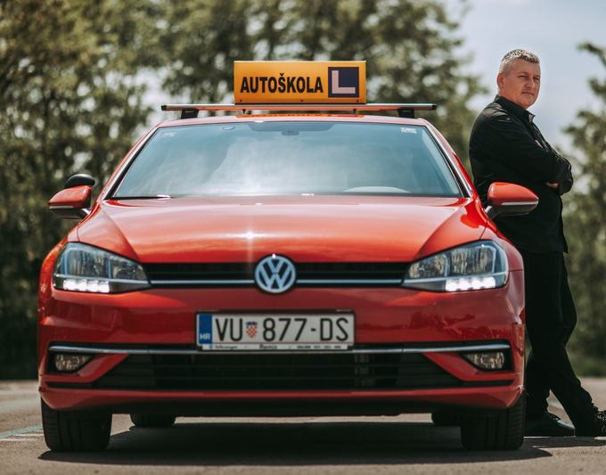
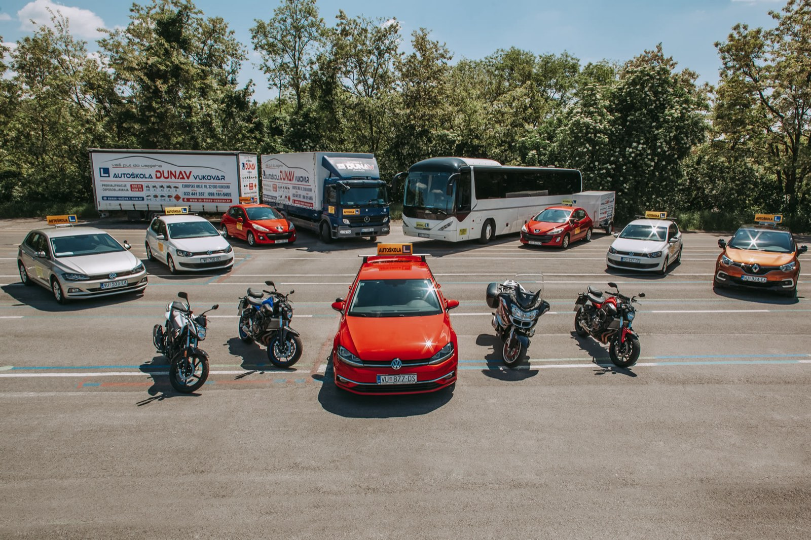
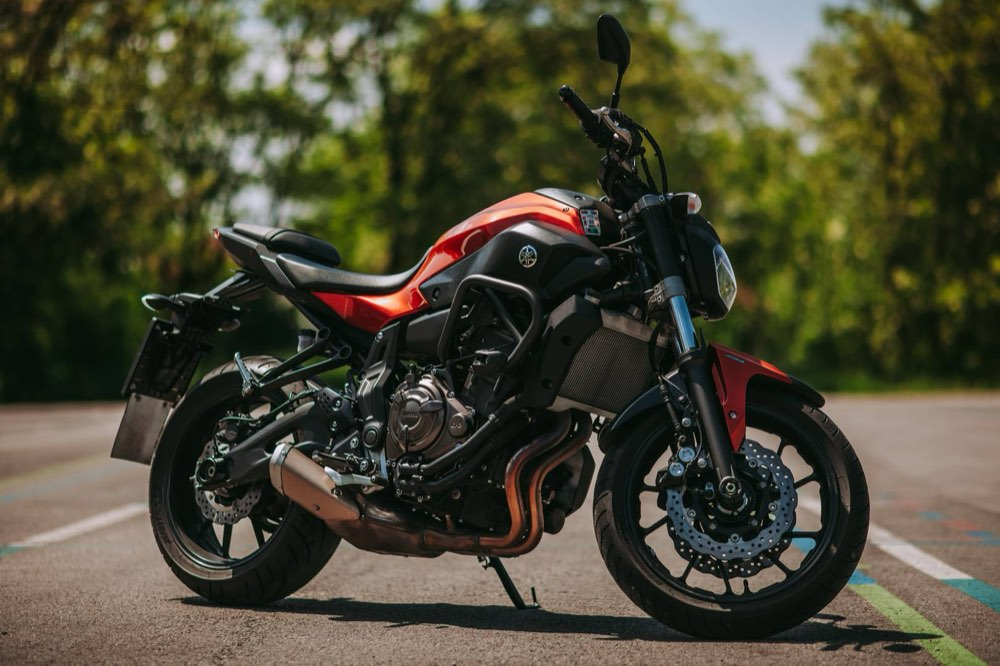
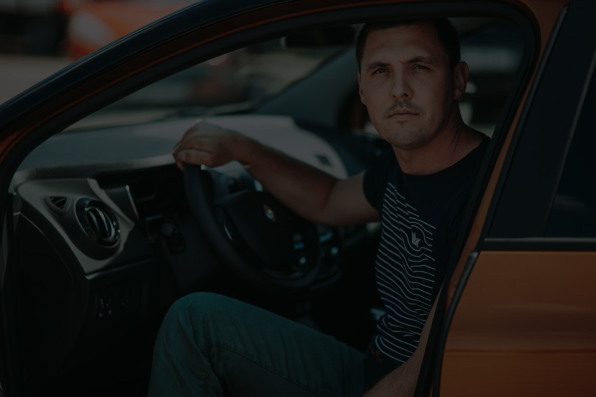
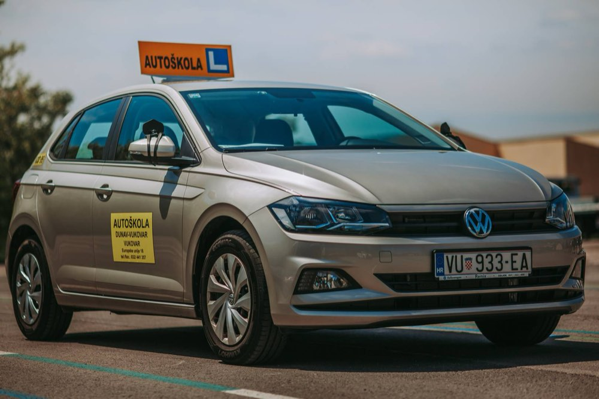
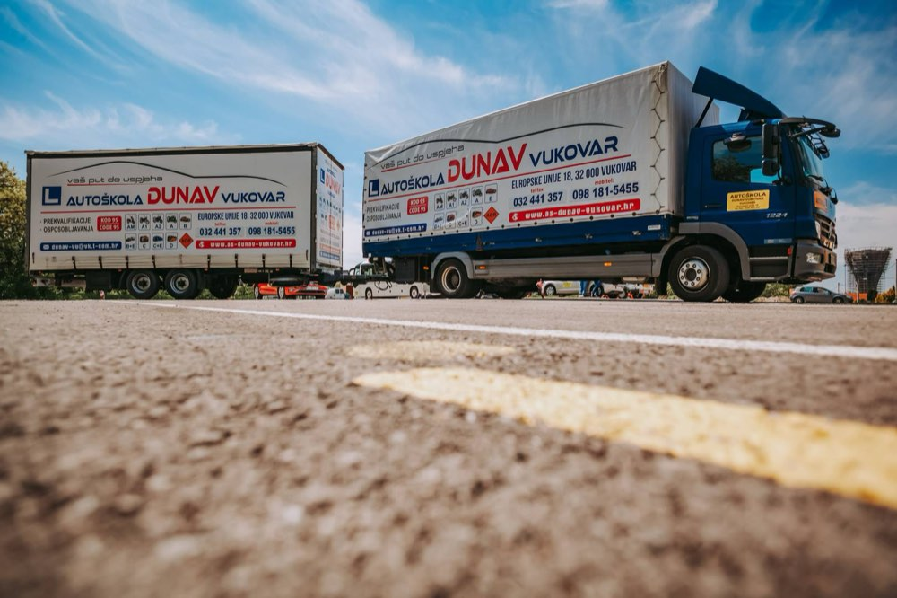
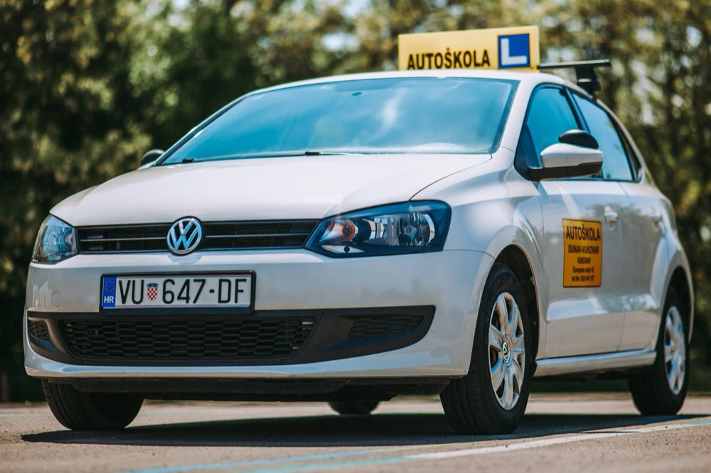
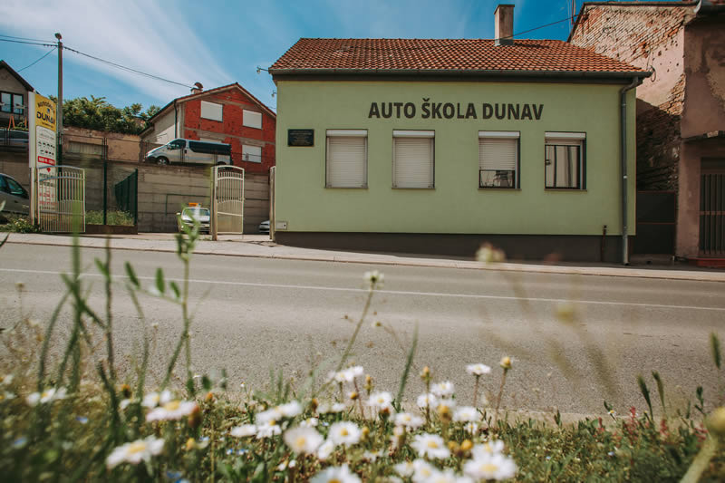
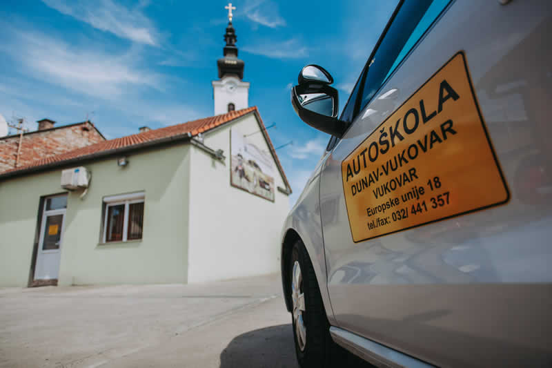

Vlasnik · stručni voditelj
Zvonko Mudri
Magistar prometa, smjer sigurnost u cestovnom prometu. Predavač i instruktor za kategorije A1, A2, A, B, BE, C, CE, D i DE, s 27 godina iskustva u struci.
Autoškola DUNAV-VUKOVAR osposobljava kandidate za vozače od 1998. godine, za sve kategorije od motocikla do autobusa. Kod nas birate instruktora, vozilo, termine vožnje i predavanja.

Teorija iz prometnih propisa i sigurnosnih pravila te praktična vožnja, za devet kategorija, u jednoj autoškoli.

Yamaha YS125, Yamaha MT 07 i BMW R 1200 RT.

Šest automobila za kategoriju B, a za BE prikolica Pongratz.

Mercedes Atego, a za CE prikolica Fliegl.

Autobus MAN Neoplan za kategoriju D.
Za vozače koji imaju vozačku dozvolu, ali nemaju iskustva za volanom.
Osposobljavanje za profesionalne vozače (KOD 95) i za B kod 96.
Održava se u prostorijama naše autoškole u Ulici Europske unije 18.
Nastavu iz prometnih i sigurnosnih pravila vodimo uz interaktivne prezentacije, a instruktori u obuci primjenjuju pravila prometne kulture.

Sami odabirete instruktora i automobil na kojem želite učiti voziti.
Sami birate kada ćete na vožnju i na predavanja.
Dogovorite način plaćanja koji vam najviše odgovara.
Instruktori s dugogodišnjim iskustvom rada s kandidatima. Ponosni smo na visoku prolaznost naših kandidata na vozačkim ispitima.
U autoškoli vas dočekuje ljubazno osoblje i ugodan, moderno uređen prostor za nastavu.
Motocikli, šest automobila, kamion, autobus i dvije prikolice.









Brojni polaznici naše autoškole danas su uspješni vozači, a uvijek nam je drago sresti ih na cesti.
Nalazimo se u Ulici Europske unije 18 u Vukovaru, preko puta Pravoslavne crkve. Želja nam je prvenstveno obučiti vas za sigurnog vozača, modernim metodama i nastavnim umijećima, te razviti pozitivan odnos prema drugim sudionicima u prometu.

Magistar prometa, smjer sigurnost u cestovnom prometu. Predavač i instruktor za kategorije A1, A2, A, B, BE, C, CE, D i DE, s 27 godina iskustva u struci.
Prva osoba koju vidite kad dođete k nama. Uvijek nasmijana i zna odgovore na sva vaša pitanja.
Za kategorije A1, A2, A, B, BE, C, CE, D i DE. Uz to nudimo kondicionu vožnju, osposobljavanje za KOD 95 i B kod 96.
Da. Kod nas birate instruktora, vozilo, termine vožnje i predavanja, kao i način plaćanja.
Tečaj prve pomoći održava se u prostorijama naše autoškole u Ulici Europske unije 18.
To je vožnja za vozače koji već imaju vozačku dozvolu, ali nemaju iskustva za volanom.
Aktualnu cijenu za pojedinu kategoriju dobit ćete na upit, telefonom ili e-mailom. Načini plaćanja su fleksibilni.
U Ulici Europske unije 18 u Vukovaru, preko puta Pravoslavne crkve. Radimo radnim danom od 7 do 15 sati. Subotom, nedjeljom, praznikom i blagdanom ne radimo.